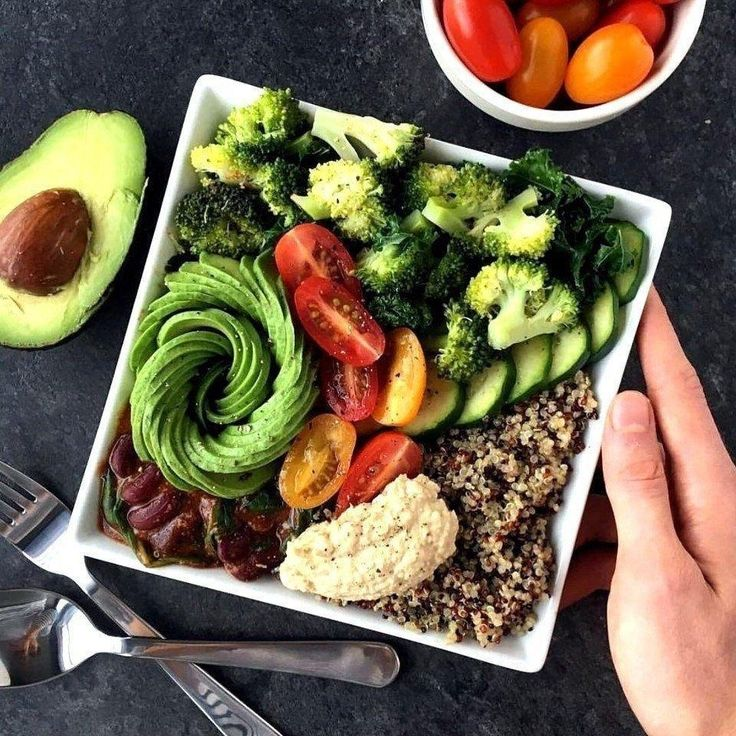

Польза правильного питания
Большинство из необходимых для обеспечения жизнедеятельности вещества мы получаем из пищи и воды, поэтому от их химического и биологического состава зависит наше здоровье, психофизическое развитие, внешний вид, трудоспособность, настроение, долголетие и качество жизни в целом. Ни один другой фактор не оказывает столь значительное влияние на наш организм, как культура пищевого поведения.
